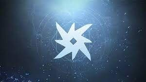
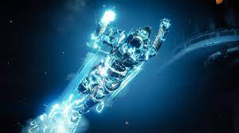

previous page

TITAN ARC
SUPERS
Arc was considered the weakest subclass in Destiny 2, that is until it was upgraded to Arc 3.0 like the other subclasses. Arc is used now more than ever before, and when paired with the Titan class, it sure packs a punch! When a Titan uses Arc, they are called a Striker.
You can electrify your enemies with one of two supers. Fly through the air and smash your enemies into the ground with Thundercrash.

Having the ability to fly with this power makes it a very popular super for Strikers.
The flying gives you an advantage becuase it is harder for enemies to shoot you and you can get to where you want to crash fast.
More of a melee person? punch your way through a large field of enemies with Fists of Havoc.
 This super electrifies your fists, making your punches even more devastating.
When activated the Striker jumps into the air and slams the ground with their fists, obliterating any enemies within the radius of the blast.
After this happens you can go along and electrify your enemies with your shocking fists.
This super electrifies your fists, making your punches even more devastating.
When activated the Striker jumps into the air and slams the ground with their fists, obliterating any enemies within the radius of the blast.
After this happens you can go along and electrify your enemies with your shocking fists.
GRENADES
You can chooose one of three basic grenades.
Pulse Grenade: A grenade that periodically damages enemies inside its blast radius.
Flashbang Grenade: An explosive grenade that disorientates the enemies it damages.
Lightning Grenade: A grenade that sticks to any surface and emits bolts of lightning.
Visit Ikora Rey in the Tower to unlock more grenades.